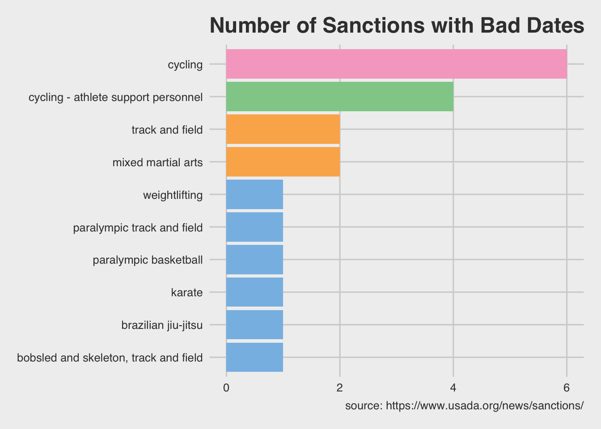

This document outlines some common data reshaping tasks with tidyr.
The slides for this presentation are here
There is also an accompanying RStudio.Cloud project
Read more about dplyr here and tidyr on the tidyverse website, or in the Data Transformation chapter of R for Data Science.
tidyr is part of the core tidyverse packages, so we install and load this meta-package below.
install.packages("tidyverse")
library(tidyverse)We’re going to use some of the fs package functions for managing our files and data.
Check your files and folders with dir_tree or dir_ls.
fs::dir_tree("data", recurse = FALSE)## data
## ├── 2020-11-24-TopPharmCompRaw.csv
## ├── 2020-12-11-BioTechDrugStocks.csv
## ├── 2020-12-11-BmrmGoogle.rds
## ├── 2020-12-20-BioTechStocks.csv
## ├── 2020-12-24-BioTechStocks.csv
## ├── 2020-12-29-PricesWide.csv
## ├── 2020-12-30-PricesWide.csv
## ├── AppleMobRaw.csv
## ├── FasterCures.csv
## ├── Infected.csv
## ├── LabData.csv
## ├── LabProc.csv
## ├── SmallLabData.csv
## ├── TopPharmComp.csv
## ├── UsadaBadDates.csv
## ├── UsadaRaw.csv
## ├── VisitNAData.csv
## ├── original-starwars.csv
## └── starwars.rdsWe can also use dir_ls to get the paths to print to the screen so we can easily import.
fs::dir_ls("data", recurse = FALSE)## data/2020-11-24-TopPharmCompRaw.csv data/2020-12-11-BioTechDrugStocks.csv
## data/2020-12-11-BmrmGoogle.rds data/2020-12-20-BioTechStocks.csv
## data/2020-12-24-BioTechStocks.csv data/2020-12-29-PricesWide.csv
## data/2020-12-30-PricesWide.csv data/AppleMobRaw.csv
## data/FasterCures.csv data/Infected.csv
## data/LabData.csv data/LabProc.csv
## data/SmallLabData.csv data/TopPharmComp.csv
## data/UsadaBadDates.csv data/UsadaRaw.csv
## data/VisitNAData.csv data/original-starwars.csv
## data/starwars.rdsfs also gives us the metadata of any folder we have access to. This can come in handy if we’re looking for a specific version of a file, or a file that was created at a specific date.
fs::dir_info("data", all = TRUE) %>%
dplyr::arrange(desc(modification_time))For example, lets look for the largest file in the data folder.
fs::dir_info("data", all = TRUE) %>%
filter(type == "file") %>%
arrange(desc(size)) %>%
select(path, size) %>%
slice(1)Lets import all the Lab data files in data using fs and purrr.
fs::dir_ls(path = "data", regexp = "Lab") %>%
purrr::map_dfr(read_csv, .id = "source") -> AllLabsAllLabsseparate()This allows us to split columns apart into multiple variables.
Take a look at SmallLabData below (we’ve used some dplyr and the janitor::remove_empty() function to get SmallLabData from AllLabs).
AllLabs %>%
filter(source == "data/SmallLabData.csv") %>%
select(-source) %>%
janitor::remove_empty() -> SmallLabDataSmallLabDataSeparate ref into ref_value and ref_units
SmallLabData %>%
separate(col = ___, into = c("_______", "_______"), sep = " ")SmallLabData %>%
separate(col = ref, into = c("ref_value", "ref_units"), sep = " ")separate_rows()separate_rows() is similar to separate(), but drops the values down the rows. This is commonly used when we have more than one value in each column.
Take a look at LabData below.
AllLabs %>%
filter(source == "data/LabData.csv") %>%
select(-source) %>%
janitor::remove_empty() -> LabDataLabDataPut all the values into their own cell, and make sure the new variable is numeric.
LabData %>%
separate_rows(_____, sep = _____, convert = TRUE)separate_rows sol 1Note the convert argument to make value numeric.
LabData %>%
separate_rows(value, sep = ", ", convert = TRUE)unite()Just like separate/separate_rows allows us to split up columns, unite() lets us stick them back together!
Take a look at LabProc.
AllLabs %>%
filter(source == "data/LabProc.csv") %>%
select(-source) %>%
janitor::remove_empty() -> LabProcLabProcSeparate the labs from each other, and drop them down the rows.
LabProc %>%
separate_rows(lab_proc, sep = "___")Separate the labs from each other, and drop them down the rows.
LabProc %>%
separate_rows(lab_proc, sep = "; ") Put lab, value, and units in to their own columns.
LabProc %>%
separate_rows(lab_proc, sep = "___") %>%
separate(col = lab_proc,into = c('__', '_____', '_____'),
sep = " ", convert = ____)Put lab, value, and units in to their own columns.
LabProc %>%
separate_rows(lab_proc, sep = "; ") %>%
separate(col = lab_proc,into = c('lab', 'value', 'units'),
sep = " ", convert = TRUE) Unite lab, value and units into lab_name (don’t remove the previous columns with remove = FALSE).
LabProc %>%
separate_rows(lab_proc, sep = "___") %>%
separate(col = lab_proc,into = c('__', '_____', '_____'),
sep = " ", convert = ____)
unite(col = "_______", lab:units, sep = " ", remove = _____)Unite lab, value and units into lab_name (don’t remove the previous columns with remove = FALSE).
LabProc %>%
separate_rows(lab_proc, sep = "; ") %>%
separate(col = lab_proc,into = c('lab', 'value', 'units'),
sep = " ", convert = TRUE) %>%
unite(col = "lab_name", lab:units, sep = " ", remove = FALSE)Joins give us the ability to combine multiple datasets on a common column. We’re going to be using the starwarsdb package, which contains data from the Star Wars API.
We’ll load the data below:
library(starwarsdb)
library(dm)starwarsdbThe code below creates and displays the data model for the tables in this package
StarWarsDataModel <- dm_draw(dm = starwars_dm(),
graph_name = "StarWarsDataModel")
StarWarsDataModelLoad the starwarsdb::films dataset, removing the opening_crawl column, and filter to only episodes 4-6. Store these data in StarWarsFilms
StarWarsFilms <- starwarsdb::films %>%
select(-____________) %>%
filter(episode_id >= ___ & episode_id <= ___)
StarWarsFilmsStarWarsFilms <- starwarsdb::films %>%
select(-c(opening_crawl, director, producer)) %>%
filter(episode_id >= 4 & episode_id <= 6)
StarWarsFilmsThe first join we will cover is dplyr::left_join().
left_joinA left_join keeps all of x, and joins it to all matching rows from dataset y
Left-join StarWarsFilms to starwarsdb::films_vehicles on "title", then select() the vehicle column, then everything() else.
Assign to StarWarsFilmVeh
left_join(x = _____________,
y = starwarsdb::films_vehicles,
by = ______) %>%
select(_____________,
everything()) -> StarWarsFilmVeh
StarWarsFilmVehSee below:
left_join(x = StarWarsFilms,
y = starwarsdb::films_vehicles,
by = "title") %>%
select(vehicle,
everything()) -> StarWarsFilmVeh
StarWarsFilmVehinner_joinThe inner_join() joins dataset x and y, and keeps only matching rows from both.
Use an inner_join to join StarWarsFilmVeh to starwarsdb::pilots on "vehicle" and assign it to StarWarsFilmVehPil.
inner_join(x = StarWarsFilmVeh,
y = _________,
by = _________) -> _____________
StarWarsFilmVehPilSee below:
inner_join(x = StarWarsFilmVeh,
y = starwarsdb::pilots,
by = "vehicle") -> StarWarsFilmVehPil
StarWarsFilmVehPilright_joinThe right_join() includes all the rows in dataset y, and joins it the matching rows in dataset x.
Use a right_join() to join StarWarsFilmVehPlt to starwarsdb::films_planets on "title", keeping all the rows in starwarsdb::films_planets. Use select() to rename planet to film_planet and assign this to StarWarsFilmVehPltPlnt
right_join(x = __________________,
y = __________________,
by = "title") %>%
select(vehicle:release_date,
film_planet = _______,
pilot) -> StarWarsFilmVehPltPlntSee below:
right_join(x = StarWarsFilmVehPil,
y = starwarsdb::films_planets,
by = "title") %>%
select(vehicle:release_date,
film_planet = planet,
pilot) -> StarWarsFilmVehPltPlnt
StarWarsFilmVehPltPlntanti_joinThe anti_join() keeps all rows in dataset x that do not have a match in dataset y. Note the last join created empty values for vehicle, episode_id, release_date, and pilot.
StarWarsFilmVehPltPlnt %>%
filter(is.na(episode_id))Use the anti_join() to join StarWarsFilmVehPltPlnt to StarWarsFilms and create a dataset with only title and film_planet (these should only contain the titles not in StarWarsFilms).
anti_join(x = StarWarsFilmVehPltPlnt,
y = ____________,
by = c("title", "episode_id", "release_date")) %>%
select(________, ________)anti_join(x = StarWarsFilmVehPltPlnt,
y = StarWarsFilms,
by = c("title", "episode_id", "release_date")) %>%
select(title, film_planet)Nested data refers to a dataset in which a column is holding a list of data frames (or tibbles). These can be useful for manipulating data, and we’re going to give an example of using nested data to reshape a column combining two sets of dates.
unnest() deals with nested data, which can be complicated to explain, so we’ll use an example. Run the code below to download data from the Anti-Doping Agency Sanction database.
source("code/01-create-usada-data.R")These data have two dates (original and updated) in a single column (sanction_announced). We only want updated dates in their own columns.
UsadaBadDatesstr_splitUse the stringr package’s str_split function to split the bad dates on the "updated" pattern.
UsadaBadDates %>%
dplyr::mutate(sanction_dates =
# 1) split this on the "updated" pattern
stringr::str_split(string = sanction_announced,
pattern = "updated")) %>%
# only return what we're interested in
dplyr::select(athlete, sanction_announced, sanction_dates)This creates a nested column (sanction_dates), which we can deal with by unnest()ing it. Let’s take a better look with listviewer (but only look at athlete and sanction_dates).
library(listviewer)
UsadaBadDates %>%
dplyr::mutate(sanction_dates =
# 1) split this on the "updated" pattern
stringr::str_split(string = sanction_announced,
pattern = "updated")) %>%
# only return what we're interested in
dplyr::select(athlete, sanction_dates) %>%
listviewer::jsonedit(mode = "view")unnestAfter unnesting, we can see the dates have been repeated down the rows (like separate_rows()).
UsadaBadDates %>%
dplyr::mutate(sanction_dates =
# 1) split this on the "updated" pattern
stringr::str_split(string = sanction_announced,
pattern = "updated")) %>%
# convert the output from split into multiple rows
tidyr::unnest(sanction_dates) %>%
# check this to see what is happening
dplyr::select(athlete, sanction_announced, sanction_dates)filterWe can see all of the updated dates are on a new line, and the original dates still contain the text. Now I can filter out the rows with an original date (because I am only interested in the updated dates).
UsadaBadDates %>%
dplyr::mutate(sanction_dates =
# 1) split this on the "updated" pattern
stringr::str_split(string = sanction_announced,
pattern = "updated")) %>%
# 2) convert the output from split into multiple rows
tidyr::unnest(sanction_dates) %>%
# 3) remove the "original" dates
dplyr::filter(!str_detect(string = sanction_dates,
pattern = "original")) %>%
# check this to see what is happening
dplyr::select(athlete, sanction_announced, sanction_dates)str_remove_allNow I can clean up the updated sanction_dates and format it.
UsadaBadDates %>%
dplyr::mutate(sanction_dates =
# 1) split this on the "updated" pattern
stringr::str_split(string = sanction_announced,
pattern = "updated")) %>%
# 2) convert the output from split into multiple rows
tidyr::unnest(sanction_dates) %>%
# 3) remove the "original" dates
dplyr::filter(!str_detect(string = sanction_dates,
pattern = "original")) %>%
# 4) remove the colon from sanction_dates
dplyr::mutate(sanction_dates = stringr::str_remove_all(
string = sanction_dates,
pattern = ":"),
# 5) remove any whitespace
sanction_dates = stringr::str_trim(sanction_dates),
# 6) format as date
sanction_dates = lubridate::mdy(sanction_dates)) %>%
# check this to see what is happening
dplyr::select(athlete, sanction_announced, sanction_dates)ggplot2How far can this pipe go??
Well, when the data are arranged in the way we want, we can test it with a visualization to check the number of sanctions per sport with bad dates.
UsadaBadDates %>%
dplyr::mutate(sanction_dates =
# 1) split this on the "updated" pattern
stringr::str_split(string = sanction_announced,
pattern = "updated")) %>%
# 2) convert the output from split into multiple rows
tidyr::unnest(sanction_dates) %>%
# 3) remove the "original" dates
dplyr::filter(!str_detect(string = sanction_dates,
pattern = "original")) %>%
# 4) remove the colon from sanction_dates
dplyr::mutate(sanction_dates = stringr::str_remove_all(
string = sanction_dates,
pattern = ":"),
# 5) remove any whitespace
sanction_dates = stringr::str_trim(sanction_dates),
# 6) format as date
sanction_dates = lubridate::mdy(sanction_dates)) %>%
# count by sport
dplyr::count(sport, sort = TRUE) %>%
# rename n
rename(`Sport Count` = n,
Sport = sport) %>%
ggplot2::ggplot(aes(x = `Sport Count`,
y = forcats::fct_reorder(as.factor(Sport), `Sport Count`),
fill = as.character(`Sport Count`))) +
geom_col(show.legend = FALSE) +
labs(x = "Number of Sanctions", y = "Sport",
title = "Number of Sanctions with Bad Dates",
caption = "source: https://www.usada.org/news/sanctions/") +
ggthemes::theme_fivethirtyeight() +
ggthemes::scale_fill_few()